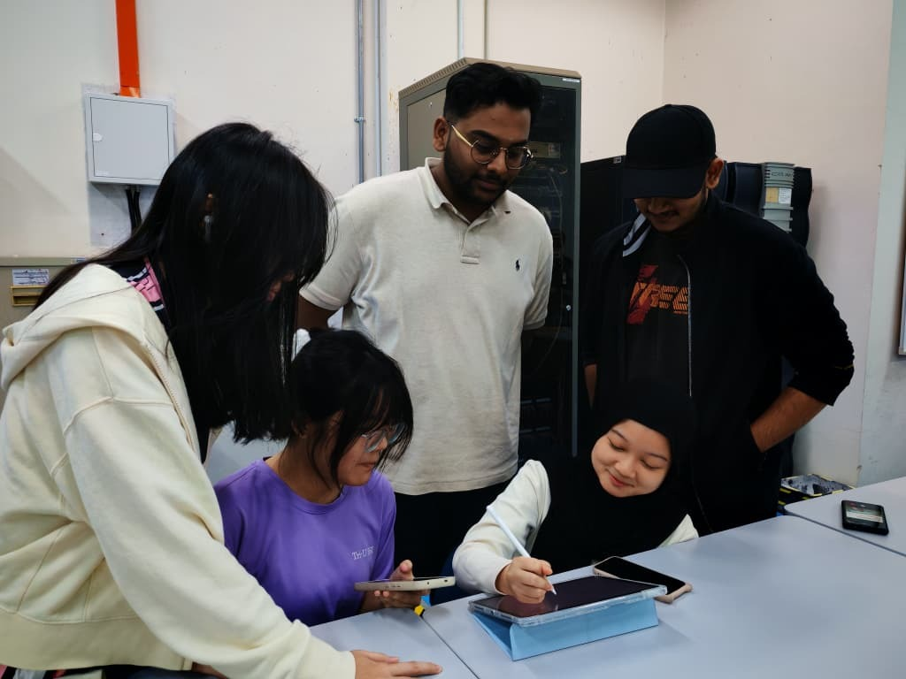

Final Year Project
(Design Thinking Project) by Group 2
Project Name : Smart-Travel Planner
Reflection on Final Year Project: Smart-Travel Planner
By the end of December 2025, my team and I completed our Final Year Project of Design Thinking Project, which was titled Smart-Travel Planner.
First and foremost, we built this idea from scratch because we wanted to solve the main issue faced by the travellers, which was the Information Fragmentation. Throughout the process, we applied the 5 stages of the Design Thinking Process, which are Empathy, Define, Ideate, Prototype and Test. By doing this wonderful process, we learned that a lot of users are having trouble with entering data manually when they get ideas from social media such as TikTok videos, Instagram Reels and YouTube Shorts for their travel planning. The feature we build “Link to Itinerary Converter”, was the solution we came up with for the users to help them by automatically extracting all the information from the link.
Overall, this was a very enjoyable project we had for this semester. Everyone managed to learn a new skill from this project and enhanced their problem-solving skills and teamwork.
We also did a Short Video and a Full Report for this Project.
Click Here for the Video.
Click Here for the Report.
Final Year Project 2025/2026
Duration : 4 Weeks
Section : Section 09
Title: Design Thinking Project (Smart-Travel Planner) by Group 2